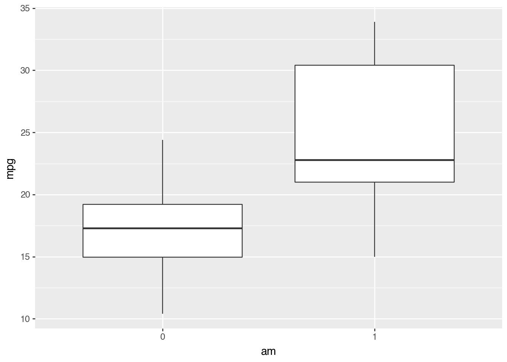
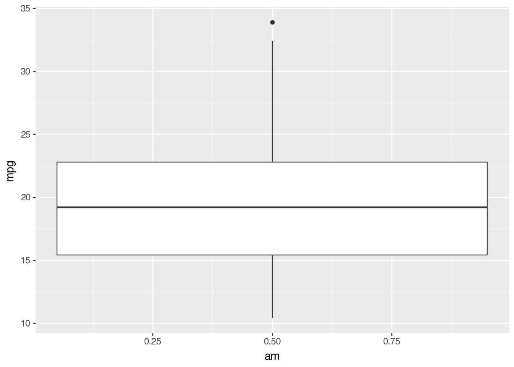
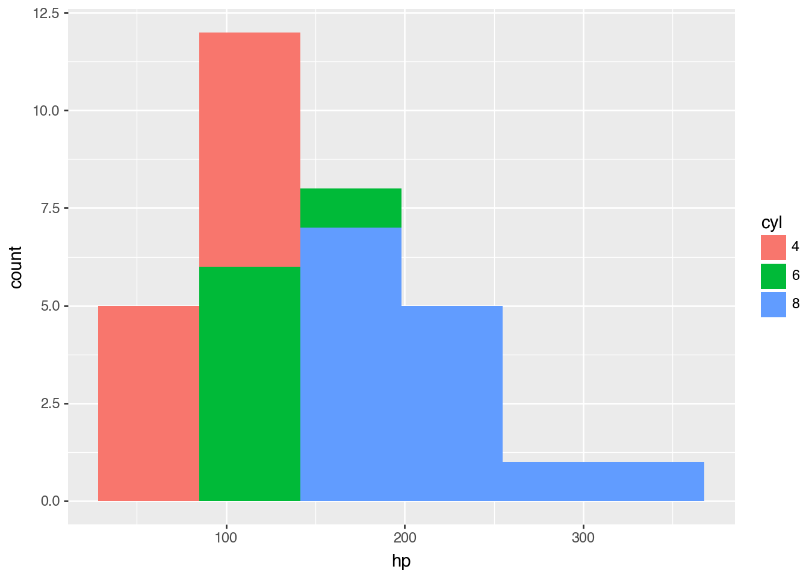
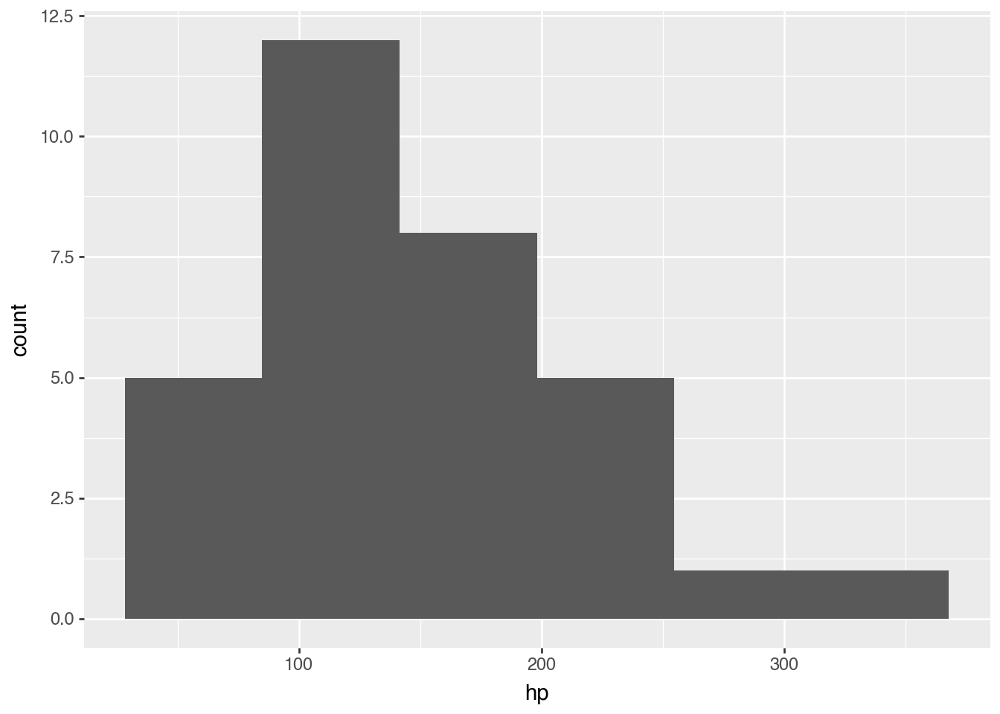
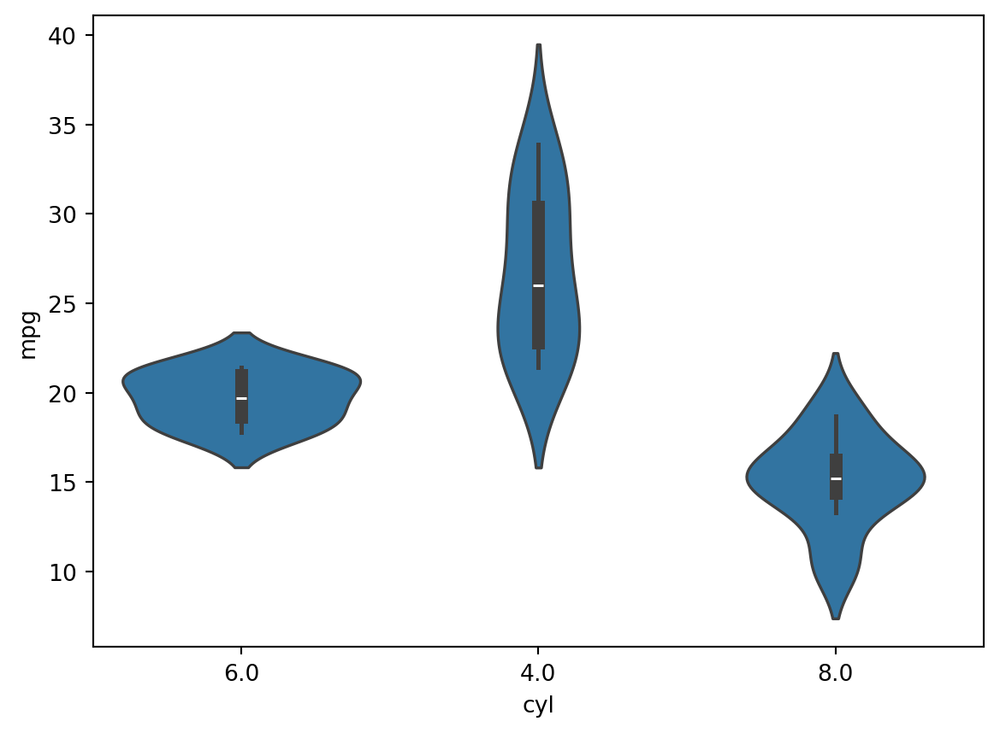
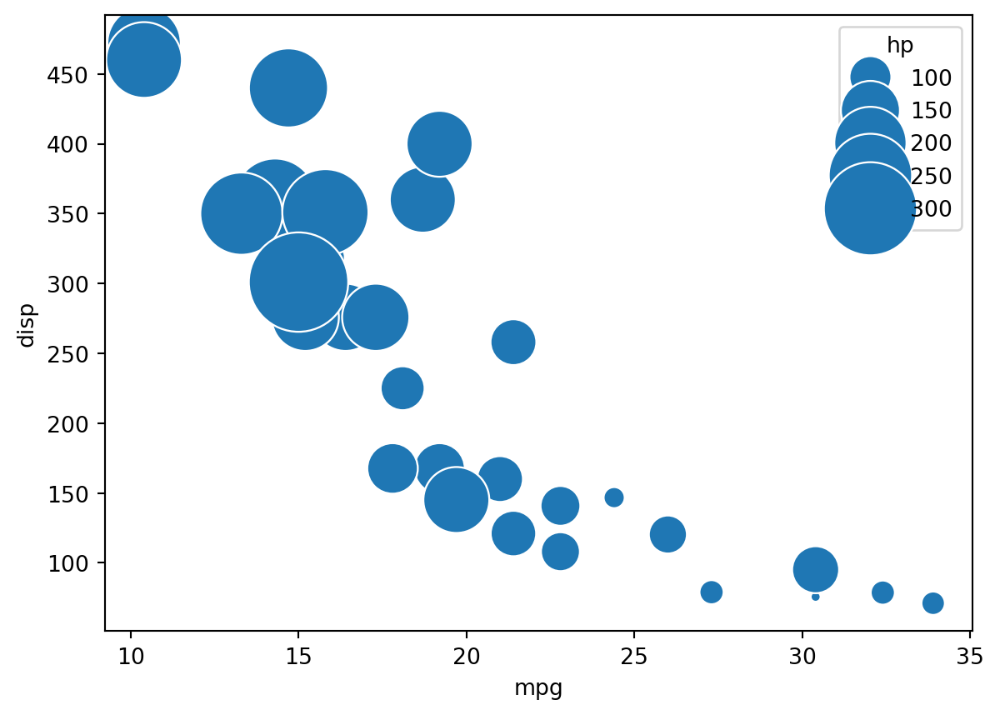
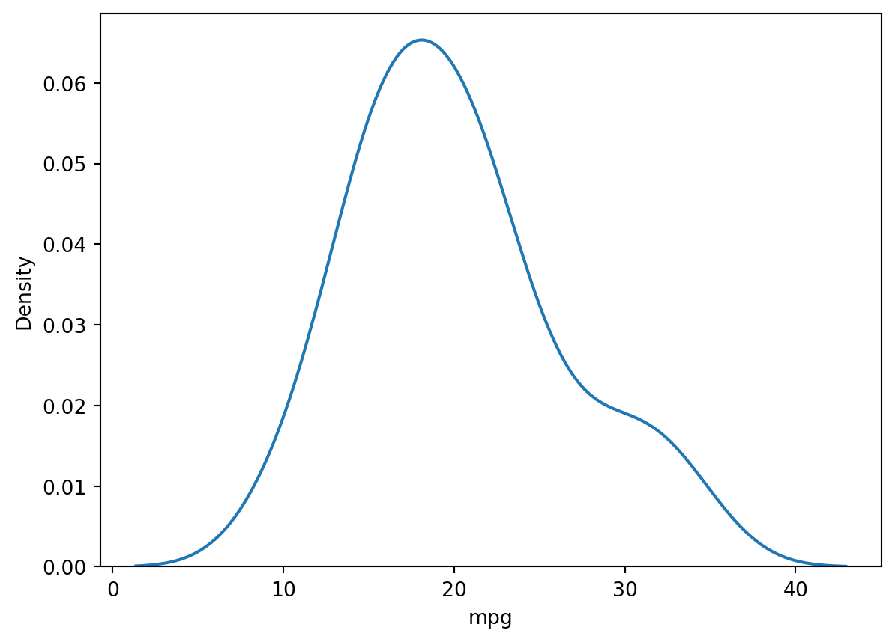

import statsmodels.api as sm
import pandas as pd
mtcars = sm.datasets.get_rdataset("mtcars", "datasets", cache=True).data
df = pd.DataFrame(mtcars)Practice Assingment 1.3
df["am"] = df["am"].astype(str) #converts am variable to have text values
df["cyl"]=df["cyl"].astype(str)
df["vs"] = df["vs"].astype(str)
df["gear"]=df["gear"].astype(str)
df["carb"]=df["carb"].astype(str)Now that these variables are converted, when viewing the variables in the dataframe,
df["vs"]rownames
Mazda RX4 0
Mazda RX4 Wag 0
Datsun 710 1
Hornet 4 Drive 1
Hornet Sportabout 0
Valiant 1
Duster 360 0
Merc 240D 1
Merc 230 1
Merc 280 1
Merc 280C 1
Merc 450SE 0
Merc 450SL 0
Merc 450SLC 0
Cadillac Fleetwood 0
Lincoln Continental 0
Chrysler Imperial 0
Fiat 128 1
Honda Civic 1
Toyota Corolla 1
Toyota Corona 1
Dodge Challenger 0
AMC Javelin 0
Camaro Z28 0
Pontiac Firebird 0
Fiat X1-9 1
Porsche 914-2 0
Lotus Europa 1
Ford Pantera L 0
Ferrari Dino 0
Maserati Bora 0
Volvo 142E 1
Name: vs, dtype: objectthe result “dype:object” indicats that this variable has been changed to a string.
Part 1: Categorical vs. Float Variable Visualization
1)
import plotnine as p9
from plotnine import *Side-by-side boxplots of the mpg variable by the different values of the am variable:
Using “am” as a categorical variable:
(ggplot(df, aes(x = "am", y = "mpg"))
+ geom_boxplot()
)
Using “am” as a float variable:
df["am"] = df["am"].astype(float)
(ggplot(df, aes(x = "am", y = "mpg"))
+ geom_boxplot()
)
When you convert “am” back into a float variable, python no longer considers the two values of am to be seperate cases/categories, and it creates a single box. This can be interpreted as an overall average distribution for “mpg” for all “am” values. However, when “am” is a categorical/string variable, we can begin to interpret the differences in “mpg” between the two different “am” values.
2)
from plotnine import geom_histogramUsing cyl as a categorical variable:
(ggplot(df,
aes(
x = "hp",
fill = "cyl"
))
+ geom_histogram()
)/opt/anaconda3/lib/python3.13/site-packages/plotnine/stats/stat_bin.py:112: PlotnineWarning: 'stat_bin()' using 'bins = 6'. Pick better value with 'binwidth'.
Using cyl as a float variable:
df["cyl"]=df["cyl"].astype(float)
(ggplot(df,
aes(
x = "hp",
fill = "cyl"
))
+ geom_histogram()
)/opt/anaconda3/lib/python3.13/site-packages/plotnine/stats/stat_bin.py:112: PlotnineWarning: 'stat_bin()' using 'bins = 6'. Pick better value with 'binwidth'.
In the first plot (using cyl as a categorical variable), we can see the differences between different cyl levels (4,6 and 8). However, once we make this a float variable again, the histogram is all one color, and adding cyl to the histogram doesn’t give the histogram any additional information.
df["am"] = df["am"].astype(str)
df["cyl"]=df["cyl"].astype(str)Part 2: Creating New Visualizations
1)
import seaborn as sns
# plot
sns.violinplot(x=df["cyl"], y=df["mpg"])
2)
import matplotlib.pyplot as plt
import seaborn as sns
# use the scatterplot function to build the bubble map
sns.scatterplot(data=df, x="mpg", y="disp", size="hp", legend=True, sizes=(20, 2000))
# show the graph
plt.show()
3)
import seaborn as sns
# Make default density plot
sns.kdeplot(df['mpg'])